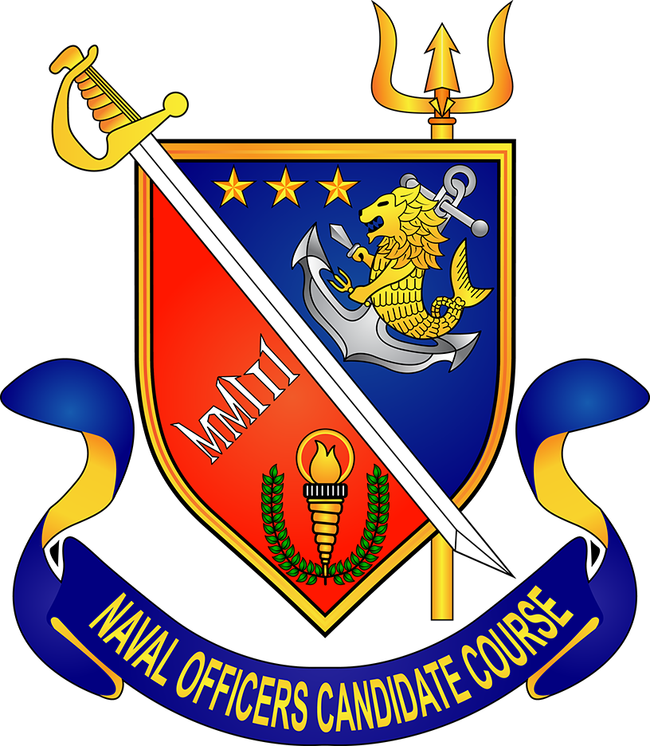

Naval Officer Candidate Course (NOCC)

Shield
This broad peice of armor made of right materials symbolizes protection here the Naval Officer Candidate Course is an integral part of the Philippine Navy. the shield depicts the Philippine Navy's role as protector of the country's sovereignty and territorial integrity. Thus, NOCC members and graduates are dedicated to sacrifice their dignified profession so as to effectively and efficiently carry out its primordial mission as one of the protectors of the country.
Sword
As a highly personal weapon, the sword stands for bravery and courage which were instilled to every Officer-Candidates. It likewise symbolizes for NOCC graduates to be an officer and a gentleman.
Colors (Blue, Red, White, and Yellow Gold)
The colors blue, red, white, and yellow gold completes the colors of the national ensign of the Republic of the Philippines. On the other hand, colors blue and yellow gold are traditionally used by the Navy which represents the sea and standard of excellence.
Three (3) Stars
The three stars correspond to the three main islands of the Republic of the Philippines comprising of Luzon, Visayas and Mindanao which the Philippine Navy is mandated to defend.
Sea Lion and Anchors
These elements embody the Philippine Navy.
Torch
The torch symbolizes life and regenerateive power of the flame. As constituent of the Philippine Navy, Officer-Candidates were enlightened and guided by certain standards being set in order to maintain the Navy's reputation as a treasured Profession. likewise, the torch was adapted in NETC emblem that signifies knowledge and wisdom.
Laurel
In line of the Officer-Candidate's achievements thru theor capability to stand out and excel, the laurel connotes Honor and Glory won for every great achievement.
Trident
This three-pronged staff represents Strength, Intelligence and Celverness possess by every Officer-Candidates as they handle great responsibilities in the Philippine Navy particularly in conning the PN's vessels and in commanding ground units of the Philippine Marine Corps. Moreover, the Trident was also depicted in the sea prowess of the Philippine Navy as well as the dexterity of the Philippine Marine Corps as an enforcer of laws and vanguards of National Security.
Roman Numeral MMIII
This symbolizes the year where the first class of Naval Officer Candidate Course was convened. Significantly, on 29 June 2003, thirty-five (35) strong OCs had undergone the strenuous mental and physical military training. As such, the organization continuously breed and equip Officer-Candidates with desired character, finest naval skill and exceptional leadership.
|